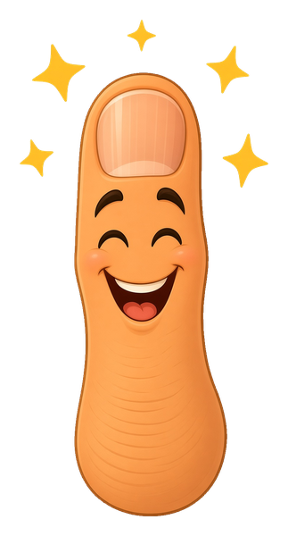
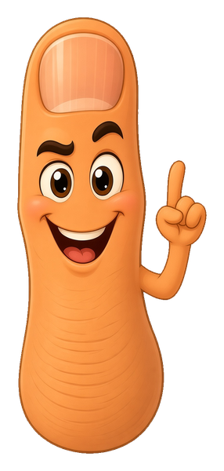

ci, in plain words
You already have one robot

Every time I upload a file to my site from my phone, a computer at GitHub wakes up, grabs the new files, and puts them on the live site. It shows up in the repo's Actions tab as a run called pages build and deployment. I never set it up; GitHub Pages turns it on for you.
That robot is a workflow: a list of steps a computer runs by itself when something happens, like an upload. The grown-up name for robots that check your work on every upload is CI, continuous integration. GitHub's version is called GitHub Actions, and on a public repo like mine its standard computers cost nothing.
My Pages robot ships whatever I give it, so a file with a broken script gets a green check and goes live broken. This chapter is about teaching a robot to look before it ships.
your robot
Watch one upload go live
Pick what you're uploading and how the repo is set up, then push it. Each step is something the Pages robot really does.
the file
the repo

Pages can run a site builder called Jekyll. Jekyll reads {{ and {% as its own commands, but only on pages that open with a block between two --- lines. An empty file named .nojekyll tells the robot to skip Jekyll and ship files exactly as they are. Both of my repos have one.
the file
A workflow is a short text file
You write a robot by putting a small file in a folder called .github/workflows/ in your repo. The format is YAML: plain lines, indented with spaces, where each line is a name and a value. Tap each part to see what it does.

The phone uploader can't make nested folders. On the repo page, use Add file, then Create new file, and type the whole name: .github/workflows/check.yml. Each slash you type turns into a folder.
your checks
A robot only catches what you told it to look for
Before a zip ever reaches me, my builds go through a list of checks: the scripts parse, no outside fonts, the badge got bumped, no em dashes, the page fits a 320px phone, and the Breaker's taps with saved data blocked. Any of those can run as a robot step on every upload.
Below are eight real kinds of upload, each with one problem planted (one is clean). Turn checks on, push them all, and see what gets stopped and what goes live.

A workflow can be allowed to change files and push them back. Mine won't be: a red X tells me what to fix, and I still do every upload from my phone myself. A workflow can also run on a schedule with no upload at all. My monthly Breaker sweep works the same way, but it runs as a scheduled task outside GitHub.
missions
Prove it
Six things to make happen in the sandboxes above. They tick off as you go.
the gym
Practice: think like the robot
Randomized drills. A wrong call resets your streak.
quiz